Charts#
A risk report shows its tables as charts: the event rate of each bin, the ROC curve of a score, the shares that moved since development. kivi.plotting draws the result tables of the other modules with matplotlib, one function per table: woe_chart() for a WOE table, correlation_chart() for a correlation matrix, roc_chart() and precision_recall_chart() for a ROC table, gains_chart() for a gains table, distribution_chart() for the events and non-events of a gains or WOE table, calibration_chart() for a calibration table, cutoff_chart() for a cut-off table, psi_chart() for a PSI table, monitoring_chart() for a monitoring report, vintage_chart() for a vintage table, survival_chart() for a survival table, transition_chart() for a transition matrix, rule_set_chart() for a rule set table, profit_chart() for a cut-off table with revenue and loss, and lgd_chart() for an LGD table.
The charts draw the tables of the earlier guides, from Weight of evidence and information value to Lifetime PD and expected credit loss, so this page comes last in the user guide.
matplotlib is an optional dependency of kivi. Install it with the plot extra:
python -m pip install "kivi[plot]"
The other modules do not need it, and kivi.plotting imports it only when a chart is drawn.
A worked example#
A chart draws the values of its table and nothing else. Ten observations, nine in three groups and one missing, give this WOE table:
>>> import pandas as pd
>>> from kivi.plotting import woe_chart
>>> from kivi.woe import woe_table
>>> groups = pd.Series(["a", "a", "b", "b", "b", "b", "c", "c", "c", None])
>>> target = pd.Series([1, 0, 1, 0, 0, 0, 1, 1, 0, 0])
>>> table = woe_table(groups, target)
>>> table[["total_share", "event_rate"]]
total_share event_rate
bin
a 0.2 0.500000
b 0.4 0.250000
c 0.3 0.666667
NaN 0.1 0.000000
woe_chart() is the one chart with two y-axes, and so the one that returns two Axes: one for the bars, with the left y-axis, and one for the line, which shares the x-axis of the bars and has a y-axis of its own on the right. The bars are the total_share column, the line is the event_rate column, the tick labels are the groups of the index, and the legend gives the sum of the iv column:
>>> bars, line = woe_chart(table)
>>> [bar.get_height() for bar in bars.patches] == table["total_share"].tolist()
True
>>> line.get_lines()[0].get_ydata()
array([0.5 , 0.25 , 0.66666667, 0. ])
>>> [label.get_text() for label in bars.get_xticklabels()]
['a', 'b', 'c', 'NaN']
>>> line.get_legend().get_title().get_text()
'iv = 0.536'
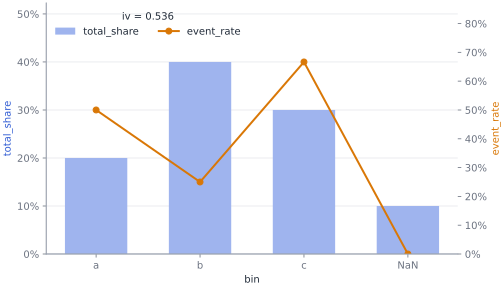
The bars read 20%, 40%, 30% and 10% on the left axis, and the line 50%, 25%, 67% and 0% on the right axis.#
Figures and axes#
Every function takes an optional ax. Without it, the function creates a figure of its own, sized for the chart and with matplotlib’s constrained layout. With it, the function draws on that Axes, so that several charts can share one figure:
>>> import matplotlib.pyplot as plt
>>> figure, (left, right) = plt.subplots(1, 2, figsize=(9, 3.5), layout="constrained")
>>> bars, line = woe_chart(table, ax=left)
>>> bars is left
True
>>> bars, line = woe_chart(table, line="woe", ax=right)
>>> len(figure.axes)
4
Each function returns the Axes it drew on, ax when it is given, so that titles, limits and labels can be changed afterwards with matplotlib, as in right.set_title("woe"). woe_chart() returns the Axes of the bars and that of the line, which is why the figure above has four Axes.
The functions never call matplotlib.pyplot.show, never change matplotlib.rcParams and never modify the table. Save a figure with figure.savefig("woe.png"), or show it with plt.show() outside a notebook. The curves that can be compared on one ax, those of roc_chart(), precision_recall_chart(), gains_chart(), calibration_chart(), cutoff_chart(), profit_chart(), survival_chart() and monitoring_chart(), take the next color of the Axes’ color cycle. The other charts use fixed colors. Fonts, grids and spines follow the active matplotlib style, so a style set with plt.style.context applies to the charts drawn inside it.
Text inside a chart is limited to column names, such as total_share and event_rate, and data values, such as the group labels and the IV. Each axis is labeled with the columns it shows, or with the name of the index for the groups and periods. The same chart therefore suits a report in any language; add titles in the language of the report.
Legends are placed so that they cover no data: woe_chart(), distribution_chart() and psi_chart() leave room for theirs at the top of the Axes, and vintage_chart() and monitoring_chart() put theirs to the right of the Axes.
WOE and event rate#
The examples from here on use the bundled bank data, split as in Risk modeling workflow into a development sample of 3,000 rows and a validation sample of 1,521 rows. A BinningSpec bins five columns on the development sample:
>>> from kivi.datasets import load_bank
>>> from kivi.spec import fit_spec
>>> data = load_bank()
>>> development, validation = data.iloc[:3000], data.iloc[3000:]
>>> columns = ["age", "balance", "housing", "contact", "poutcome"]
>>> spec = fit_spec(development[columns], development["target"])
woe_chart() draws one of its tables in the order of the table. The bins of a numeric column are already in order; sort the groups of a categorical column, for example by WOE, and draw the WOE as the line with line="woe":
>>> bars, line = woe_chart(spec.tables["age"])
>>> [label.get_text() for label in bars.get_xticklabels()]
['(-inf, 32.0]', '(32.0, 36.0]', '(36.0, 42.0]', '(42.0, 51.0]', '(51.0, inf]']
>>> bars, line = woe_chart(spec.tables["poutcome"].sort_values("woe"), line="woe")
>>> line.get_legend().get_title().get_text()
'iv = 0.423'
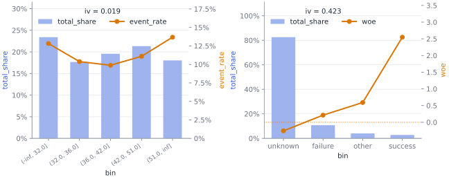
Left: the event rate of age is lowest in the middle bins. Right: four fifths of the customers have an unknown previous outcome, and the few with a previous success have by far the highest WOE.#
Read the bars and the line together: a bin with a high event rate matters more when it holds many customers. The bars use the left axis and the line the right axis, which starts at 0 for event_rate and includes 0 for woe.
Correlation#
Before Variable selection, correlation_chart() shows which WOE-encoded candidates carry the same information. It takes a correlation matrix, such as the result of DataFrame.corr, rather than the data, so that any method of correlation can be drawn:
>>> from kivi.plotting import correlation_chart
>>> woe = spec.woe_transform(development[columns])
>>> woe.corr().round(2)
age balance housing contact poutcome
age 1.00 0.02 0.15 0.05 0.01
balance 0.02 1.00 0.04 0.03 0.09
housing 0.15 0.04 1.00 0.21 0.03
contact 0.05 0.03 0.21 1.00 0.19
poutcome 0.01 0.09 0.03 0.19 1.00
>>> ax = correlation_chart(woe.corr())
>>> len(ax.texts)
25
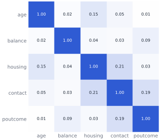
The largest correlation between two different columns is 0.21, between housing and contact.#
Each cell shows its value, blue for a positive correlation and amber for a negative one, darker towards 1 and -1. The colors always span -1 to 1, so charts of different samples compare directly, and a value outside that range, as in a covariance matrix, raises an error. For Spearman’s rank correlation, pass woe.corr(method="spearman").
ROC curve#
roc_chart() draws a roc_table(). The score below adds up the WOE values of the five columns, so that it is higher for a higher risk, as Model performance requires. A second call with the same ax adds the curve of poutcome alone, and label names both curves in the legend:
>>> from kivi.metrics import roc_table
>>> from kivi.plotting import roc_chart
>>> validation_woe = spec.woe_transform(validation[columns])
>>> score = validation_woe.sum(axis=1)
>>> y = validation["target"]
>>> ax = roc_chart(roc_table(score, y), label="score")
>>> ax = roc_chart(roc_table(validation_woe["poutcome"], y), ks=False, label="poutcome", ax=ax)
>>> [text.get_text() for text in ax.texts]
['ks = 0.299']
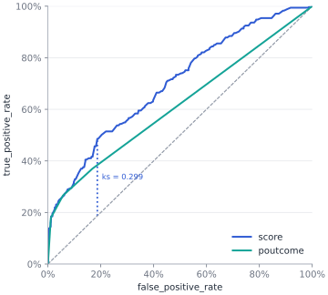
The score lies above the curve of poutcome alone at most false positive rates. The dotted segment marks its KS of 0.299.#
The dotted segment marks the KS statistic, the largest gap between true_positive_rate and false_positive_rate, which equals ks() of the score. Each curve takes the next color of the Axes, and its KS segment shares its color; pass ks=False for the curves whose KS is not needed.
Precision and recall#
precision_recall_chart() draws two other columns of the same roc_table(): flagging the customers from the highest score down, the precision, the event rate of those flagged, against the true_positive_rate, the share of all events flagged, which is also called the recall. A dashed line marks the event rate of the sample, the precision of a score that ranks at random:
>>> from kivi.plotting import precision_recall_chart
>>> ax = precision_recall_chart(roc_table(score, y), label="score")
>>> ax = precision_recall_chart(roc_table(validation_woe["poutcome"], y), label="poutcome", ax=ax)
>>> [text.get_text() for text in ax.texts]
['event_rate = 0.114']
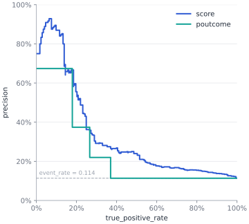
The highest scores flag events with a precision of about 85% until 14% of the events are flagged. The precision then falls towards the event rate of 11.4%, which the curve reaches when every customer is flagged. poutcome alone takes one step for each of its four groups; its last group holds most customers, so from 37% of the events on its precision is the event rate.#
The first row of a ROC table flags nobody and has no precision. Each curve steps from a recall of 0 through the other rows: up to the recall of a row, it stays at the precision of that row, because straight lines between the rows would overstate the precision between them. The area under the steps is therefore the average precision of the score. The last row flags every customer, so each curve ends on the dashed line. The line is drawn once for each event rate, so the two scores of the validation sample share it, while a curve of the development sample would get a line of its own. The chart suits samples with few events, such as fraud, where the ROC curves of good scores crowd into the upper left corner: the precision shows how many of the flagged customers are events at each recall. confusion_table() gives the precision and the recall at chosen cut-offs.
Gains and KS#
gains_chart() draws a gains_table(): the shares of all events and of all non-events in the bands reviewed so far, from the highest band down, against the share of the sample reviewed:
>>> from kivi.metrics import gains_table
>>> from kivi.plotting import gains_chart
>>> ax = gains_chart(gains_table(score, y))
>>> ax.texts[0].get_text()
'ks = 0.271'
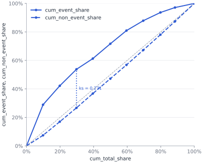
The riskiest 30% of the validation sample holds 54% of its events and 27% of its non-events, the largest gap of the ten bands.#
The solid cum_event_share curve lies above the diagonal and the dashed cum_non_event_share curve below it when the score ranks well. The dotted segment marks the band with the largest ks. The KS of the bands is at most that of roc_chart(), which compares every score rather than the band edges. As in roc_chart(), ks=False leaves the segment out, and label names the score in the legend, so that the gains of several scores can be drawn on one ax.
Distributions#
distribution_chart() draws the non_event and event columns of a gains table or a WOE table: the share of all non-events and the share of all events in each row, side by side. Fixed edges give the bands of the score short labels:
>>> import numpy as np
>>> from kivi.plotting import distribution_chart
>>> bands = gains_table(score, y, bins=[-np.inf, -1, -0.5, 0, 0.5, 1, np.inf])
>>> bands[["non_event", "event"]]
non_event event
bin
(1.0, inf] 46 40
(0.5, 1.0] 166 31
(0.0, 0.5] 280 34
(-0.5, 0.0] 292 37
(-1.0, -0.5] 173 13
(-inf, -1.0] 391 18
>>> ax = distribution_chart(bands)
>>> [f"{bar.get_height():.3f}" for bar in ax.patches[:2]]
['0.034', '0.123']
>>> ax = distribution_chart(spec.tables["age"])
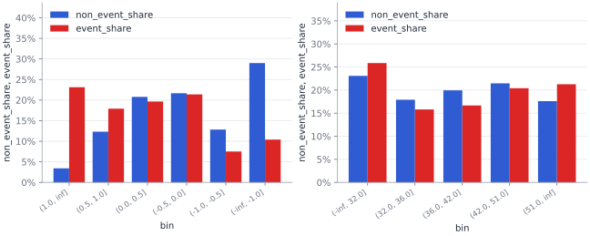
Left: the highest band holds 23% of the events and 3% of the non-events, the lowest band 10% of the events and 29% of the non-events. Right: the youngest and the oldest age bins hold a larger share of the events than of the non-events.#
The rows keep the order of the table, so the bands of a gains table run from the highest score down, and an empty band keeps its place with bars of zero height. The shares come from the raw counts: for a group without events or without non-events they differ from the event_share and non_event_share columns of a WOE table, which smoothing keeps above zero. Where the two distributions differ most, the cumulative shares of gains_chart() move apart fastest.
Calibration#
calibration_chart() draws a calibration_table(). Below, platt_fit() turns the score into PDs on the development sample, and the validation PDs are grouped into the grades of a master_scale(), as in Calibration:
>>> import numpy as np
>>> from kivi.calibration import (
... assign_grades,
... calibration_table,
... master_scale,
... platt_fit,
... platt_predict,
... )
>>> from kivi.plotting import calibration_chart
>>> slope, intercept = platt_fit(woe.sum(axis=1), development["target"])
>>> probability = platt_predict(score, slope, intercept)
>>> scale = master_scale(np.geomspace(0.02, 0.32, 5), labels=list("ABCDE"))
>>> table = calibration_table(assign_grades(probability, scale), y, probability)
>>> table
total event event_rate mean_probability
bin
A 43 1 0.023256 0.023619
B 368 17 0.046196 0.041415
C 466 46 0.098712 0.085882
D 558 69 0.123656 0.153627
E 86 40 0.465116 0.435768
>>> ax = calibration_chart(table, label="validation")
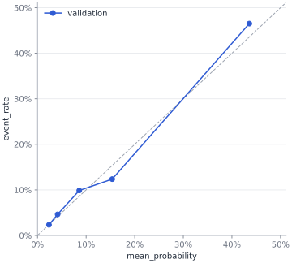
The five grades lie close to the diagonal; grade D has fewer events than predicted.#
Points above the diagonal have more events than predicted, and points below it fewer. Both axes run from 0 to just above the largest rate, so that the diagonal stays at 45 degrees. The chart shows how far each grade lies from its prediction, not whether the difference is significant; binomial_test() answers that.
Cut-offs#
cutoff_chart() draws a cutoff_table(): the bad rate of the approved book against the share of applicants approved, one point per cut-off of the PD:
>>> from kivi.plotting import cutoff_chart
>>> from kivi.strategy import cutoff_table
>>> ax = cutoff_chart(cutoff_table(probability, y, cutoffs=20))
>>> ax.get_xlabel(), ax.get_ylabel()
('approval_rate', 'approved_event_rate')
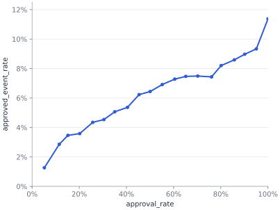
Approving more applicants raises the event rate of the approved book, from about 1% for the safest 5% of applicants to 11% when all of them are approved.#
The slope of the curve is the price in risk of a higher approval rate. Draw the tables of a current and a new score on the same ax, each with a label, to compare them at the same approval rate, as Credit strategy does.
Population stability#
psi_chart() draws a psi_table() as pairs of bars, the reference share and the current share of each group. Single customers, as in Population stability index, are much younger than the development sample:
>>> from kivi.plotting import psi_chart
>>> from kivi.stability import psi_table
>>> reference = spec.cut(development[columns])
>>> single = spec.cut(data.loc[data["marital"] == "single", columns])
>>> ax = psi_chart(psi_table(reference["age"], single["age"]))
>>> ax.get_legend().get_title().get_text()
'psi = 0.586'
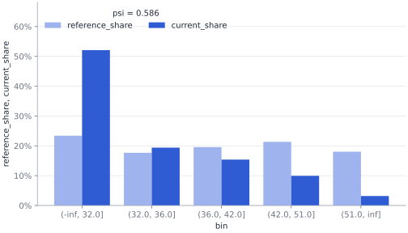
Half of the single customers fall into the youngest bin, against less than a quarter of the development sample.#
The groups whose bars differ most contribute most of the PSI, which the legend gives for the whole table.
Monitoring#
monitoring_chart() draws one column of a monitoring_table() period by period. The applications below are simulated as in Model monitoring; the outcomes of the last three months are not known yet:
>>> from kivi.datasets import make_applications
>>> from kivi.monitoring import monitoring_table
>>> from kivi.plotting import monitoring_chart
>>> reference_applications = make_applications(n_applicants=10000, rng=0)
>>> applications = make_applications(n_applicants=24000, rng=1)
>>> months = pd.period_range("2025-01", periods=12, freq="M")
>>> applications["month"] = months[np.arange(24000) * 12 // 24000]
>>> known = applications["approved"] & (applications["month"] <= months[8])
>>> report = monitoring_table(
... applications["incumbent_pd"],
... applications["month"],
... applications["target"].where(known),
... reference_score=reference_applications["incumbent_pd"],
... )
Call the function once for each column, on the panels of one figure. kind draws a column as a line, the default, or as bars, and levels marks the values that a column is compared with, such as the PSI thresholds 0.1 and 0.25. label_outer then hides the x-axis labels of the upper panel, which shares the x-axis of the lower one:
>>> figure, (top, bottom) = plt.subplots(2, 1, figsize=(8, 5), sharex=True, layout="constrained")
>>> top = monitoring_chart(report, column="gini", ax=top)
>>> bottom = monitoring_chart(report, column="psi", kind="bar", levels=[0.1, 0.25], ax=bottom)
>>> top.label_outer()
>>> [text.get_text() for text in bottom.texts]
['0.1', '0.25']
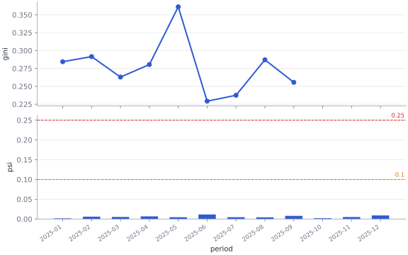
The Gini stops in September, the last month with known outcomes. The PSI stays far below 0.1 in every month.#
A line suits rates and measures of discrimination, and several columns on one ax; bars suit counts such as total and a single psi. kind decides, not the name of the column, so any table with one row per period can be drawn either way.
A stability_table() holds the PSI of each variable by period. Draw its columns on one ax, each with a label. The y-axis is labeled psi, because the columns of a stability table are named variable:
>>> from kivi.monitoring import stability_table
>>> features = ["age", "income", "debt_to_income"]
>>> application_spec = fit_spec(
... reference_applications[features], reference_applications["target"]
... )
>>> stability = stability_table(
... application_spec.cut(applications[features]),
... applications["month"],
... reference_groups=application_spec.cut(reference_applications[features]),
... )
>>> ax = None
>>> for column in stability:
... ax = monitoring_chart(stability, column=column, label=column, ax=ax)
>>> ax.get_ylabel()
'psi'
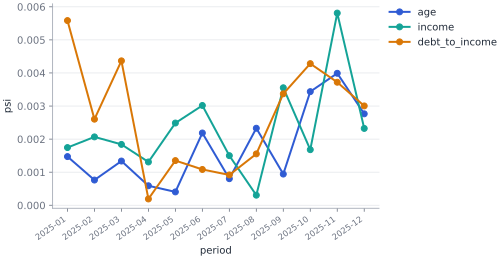
The PSI of the three variables stays below 0.01 in every month.#
Vintage curves#
vintage_chart() draws a vintage_table() with one curve per cohort, later cohorts in darker blue. The legend, to the right of the Axes, names eight of the twenty-four cohorts, evenly spread from the first to the last, since the shades of the others lie between theirs:
>>> from kivi.datasets import make_loan_panel
>>> from kivi.plotting import vintage_chart
>>> from kivi.vintage import vintage_table
>>> panel = make_loan_panel(rng=0)
>>> ever_90 = vintage_table(
... panel["loan_id"], panel["cohort"], panel["month_on_book"], panel["status"] == "90+"
... )
>>> ax = vintage_chart(ever_90)
>>> [text.get_text() for text in ax.get_legend().get_texts()]
['2024-01', '2024-04', '2024-08', '2024-11', '2025-02', '2025-05', '2025-09', '2025-12']
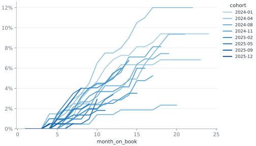
No cohort has a loan 90 days past due before its fourth month on book, and the curves of the later cohorts end where their observation ends.#
A cohort whose curve rises above those of the cohorts before it is worth a closer look. The function takes any table of the same shape, such as the cumulative PDs of convert_pd().
Survival curves#
import matplotlib.pyplot as plt
plt.close("all")
survival_chart() draws the cumulative_pd of a survival_table() as steps from period 0, or the survival with column="survival". In a loan book with early repayments, a loan that repays leaves the risk set without defaulting, which is a competing risk. The curve of cumulative_pd is then the cumulative incidence of 90+ days past due, and the chart adds the cumulative incidence of repayment:
>>> import pandas as pd
>>> from kivi.lifetime import survival_table
>>> from kivi.plotting import survival_chart
>>> panel = make_loan_panel(rng=0, prepayment=0.01).sort_values(["loan_id", "month_on_book"])
>>> last = panel.groupby("loan_id").tail(1).set_index("loan_id")
>>> first = panel[panel["status"] == "90+"].groupby("loan_id")["month_on_book"].min()
>>> duration = last["month_on_book"].copy()
>>> duration[first.index] = first
>>> event = pd.Series(0, index=duration.index)
>>> event[first.index] = 1
>>> repaid = (
... (last["balance"] == 0) & (last["month_on_book"] < last["term"]) & (event == 0)
... ).astype(int)
>>> table = survival_table(duration, event, competing=repaid)
>>> ax = survival_chart(table)
>>> [line.get_label() for line in ax.get_lines()]
['cumulative_pd', 'competing']
>>> [round(float(line.get_ydata()[-1]), 3) for line in ax.get_lines()]
[0.076, 0.19]
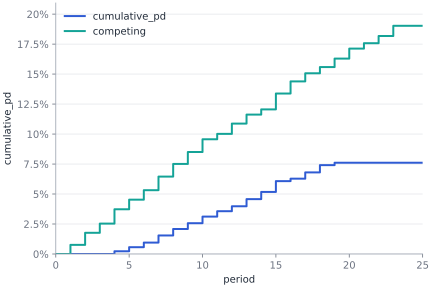
After 24 months 7.6% of the loans have reached 90+ days past due and 19% have repaid early.#
Each curve is a step function, because the estimate changes only at the periods where something happens. Without competing the chart has one curve, and column="survival" always draws one: the share of loans that have neither defaulted nor repaid.
Transition matrices#
transition_chart() draws the transition_matrix() of two consecutive month ends, the states before in the rows and the states after in the columns. A cell is written with its count, in full below 10,000 and with a suffix K, M or B above, or with its share for a matrix computed with normalize=True, and shaded by the share of its row, so that the shade shows where each state goes whatever the sizes of the states. The diagonal, the entities that stayed, is outlined in amber:
>>> from kivi.plotting import transition_chart
>>> from kivi.vintage import transition_matrix
>>> status = panel["status"]
>>> after = panel.groupby("loan_id")["status"].shift(-1)
>>> known = after.notna()
>>> states = ["current", "1-29", "30-59", "60-89", "90+"]
>>> matrix = transition_matrix(status[known], after[known], states=states)
>>> ax = transition_chart(matrix)
>>> [text.get_text() for text in ax.texts][:5]
['45.8K', '1068', '0', '0', '0']
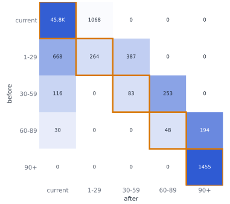
Most loans stay current, and from the bucket 90+ none of them returns.#
The chart draws a matrix of counts or of shares alike. The roll rates of roll_rates() are the share of each state that moved to the next worse one, the cell just right of the diagonal of transition_matrix(..., normalize=True), which the same chart shows with all the other cells. roll_rates() itself is a Series, one value for each state, and is read as a table, not drawn: a table with a single column raises an error, since every cell of it would be shaded as a whole row.
Rule sets#
rule_set_chart() draws a rule_set_table(), the rules applied one after the other. The bars show the new_hits of each rule, the applicants that it declines and no earlier rule declined, as a share of all applicants, and the line the approval_rate that is left after it, on the same axis. Each point of the line is therefore the one before it minus the bar of its rule, starting from 100%:
>>> from kivi.plotting import rule_set_chart
>>> from kivi.rules import rule_set_table
>>> applications = make_applications(n_applicants=40000, rng=0)
>>> flags = pd.DataFrame(
... {
... "high_debt": applications["debt_to_income"] >= 0.5,
... "young": applications["age"] < 25,
... "many_inquiries": applications["inquiries"] >= 4,
... }
... )
>>> table = rule_set_table(flags, applications["target"])
>>> ax = rule_set_chart(table)
>>> [round(float(bar.get_height()), 4) for bar in ax.patches]
[0.1128, 0.0696, 0.0199]
>>> ax.get_lines()[0].get_ydata().round(3).tolist()
[0.887, 0.818, 0.798]
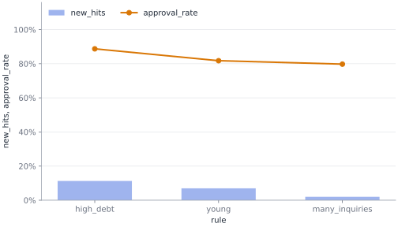
The first rule declines 11.3% of the applicants and the third only 2.0%, with the approval rate falling from 88.7% to 79.8%.#
The order of the rules decides the bars, since an applicant who hits two rules counts for the first, but it does not change the last approval rate. Both series share one axis and the function returns that one Axes.
Profit by cut-off#
A cutoff_table() computed with loss and revenue has a profit column. profit_chart() draws it against the approval_rate and marks the cut-off with the highest profit, which cutoff_chart() cannot show, since it draws the event rate. Here every approved applicant brings a revenue of 600 and every event a loss of 5,000:
>>> from kivi.plotting import profit_chart
>>> from kivi.strategy import cutoff_table
>>> table = cutoff_table(
... applications["incumbent_pd"],
... applications["target"],
... cutoffs=20,
... loss=5000.0 * applications["target"],
... revenue=pd.Series(600.0, index=applications.index),
... )
>>> ax = profit_chart(table)
>>> ax.texts[0].get_text()
'cutoff = 0.0962, profit = 4,261,600'
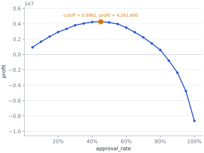
Profit rises with the approval rate up to 45% and falls after it, and approving the whole book makes a loss.#
Pass a label to each call to draw the tables of two scores on one ax. The marked point is the first row with the largest profit, and the dotted line marks zero profit. The cut-offs are those of the table, so the maximum is the best of them; a finer cutoffs locates it more closely.
LGD by group#
lgd_chart() draws a lgd_table() with three bars for each group: the mean LGD, and the zero_share and the full_share of the loans that lost nothing and everything. The mean hides that realized LGDs are bimodal, which the two shares show. The workouts of the simulated defaults that have closed, with their recoveries and costs discounted at the rate of each default, give:
>>> from kivi.datasets import make_defaults, make_recoveries
>>> from kivi.lgd import lgd_table, workout_lgd
>>> from kivi.plotting import lgd_chart
>>> defaults = make_defaults(rng=0)
>>> flows = make_recoveries(defaults, rng=0)
>>> closed = defaults[defaults["closing_date"].notna()].set_index("loan_id")
>>> flows = flows[flows["loan_id"].isin(closed.index)]
>>> workouts = workout_lgd(
... closed.index.to_series(),
... closed["default_date"],
... closed["ead"],
... flows["loan_id"],
... flows["date"],
... flows["amount"],
... rate=closed["discount_rate"],
... )
>>> table = lgd_table(closed["segment"], workouts["lgd"])
>>> ax = lgd_chart(table)
>>> [round(float(bar.get_height()), 3) for bar in ax.patches[:3]]
[0.096, 0.777, 0.685]
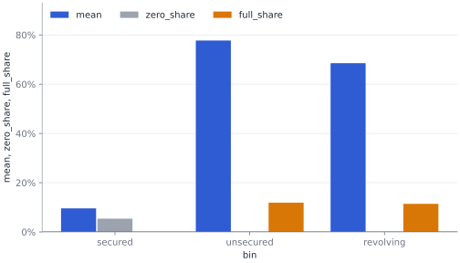
Secured loans lose 10% on average and sometimes nothing, while unsecured and revolving loans lose about 70% and often everything.#
All three bars share one percent axis. lgd_table() floors the LGDs at 0 by default, so the axis reaches below 0 only for floor=None, and above 100% when the mean of a group does.
Special values#
A special value keeps the group that cut() gave it, and the chart labels it with its code. For pdays, where -1 means that the customer was not contacted before:
>>> pdays = fit_spec(development[["pdays"]], development["target"], special={"pdays": [-1]})
>>> bars, line = woe_chart(pdays.tables["pdays"])
>>> [label.get_text() for label in bars.get_xticklabels()]
['-1', '(-inf, 105.0]', '(105.0, 175.6]', '(175.6, 255.4]', '(255.4, 342.2]', '(342.2, inf]']
The bar of -1 holds 82.5% of the sample. Charts do not reorder groups, so the special group stays where the table has it, ahead of the intervals.
Missing values#
The group of missing values is labeled NaN, as in the worked example. A missing value in a column, such as the gini of a month without known outcomes or a month on book that a cohort has not reached, leaves a gap in a line and no bar. A cut-off that approves nothing has a missing approved_event_rate and no point on the curve of cutoff_chart(). Periods of a survival table after the last one with accounts at risk have no value and end the curves of survival_chart(), and transition_chart() leaves a missing cell empty.
Limits#
The charts draw a table as it is. They have no
weightsargument: draw a table computed with weights to show weighted shares and rates.The functions choose the size of a new figure, the colors and the labels, and pass no other matplotlib properties through; change them on the returned Axes.
A chart has no title, so that it fits a report in any language. Add one with
ax.set_title.profit_chart()marks the best of the cut-offs of the table, not the best cut-off of the score, andtransition_chart()draws a matrix, not the Series ofroll_rates().monitoring_chart()draws one column per call, andcorrelation_chart()one matrix without a color bar; add one withfigure.colorbar(ax.images[0], ax=ax).The charts are static matplotlib figures, not interactive ones.
Errors and warnings#
Without matplotlib, every chart raises an ImportError that asks for pip install "kivi[plot]".
A table that lacks a column a chart needs raises a ValueError that names the columns of the table it expects and those that are missing, as when a PSI table is passed to woe_chart():
>>> woe_chart(psi_table(reference["age"], single["age"]))
Traceback (most recent call last):
...
ValueError: table must have the columns ['total_share', 'event_rate', 'iv'] of kivi.woe.woe_table, missing ['total_share', 'event_rate', 'iv']
An ax that is not a matplotlib Axes, an empty table, a column that is not numeric, a negative count or a table without events or without non-events in distribution_chart(), and a correlation matrix with a value outside [-1, 1] raise a ValueError as well. A chart that raises does not leave an empty figure behind.
matplotlib warns when more than 20 figures are open. When a report draws a chart for each of many variables, save each figure and close it with plt.close(ax.figure).